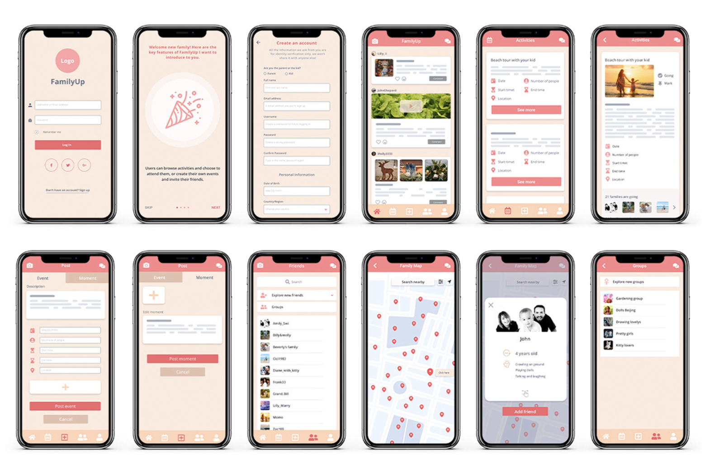

FamilyUp App
UI/UX Design
Because of the one-child policy in China, kids in Beijing grew up without a sibling to play with, therefore felt a lot of loneliness and lacked opportunities to socially interact with peers. The effects of loneliness in children can be severe, that's why I designed an app for families to socialize and bring their kids together and eliminate their feel of loneliness.
As a UX designer, I conducted research on the real issue of the only child’s feeling of loneliness, and brainstormed possible solutions, both online and offline solutions, for the problem.
- Project Overview
Role: UX Designer
Project Duration: Sep. 2019 - Dec. 2019
Skills: Wireframing, Prototyping, Problem Solving, Usability Testing, Interaction and Graphic Design.
Tools: Adobe XD, Microsoft Word, Microsoft PowerPoint
- Solution Overview
This is a family social app for families in Beijing. The features of the app serve for creating more situations for kids to play with new friends and maintain their friendship, and providing parents the chance to monitor when their kids are making friends online.
- Final Outcome
- Important Design Decisions
1. Grouped up some separate features
In my previous design, The function for users to join groups and go to group chats, and the function for users to explore the family map were all on individual pages because they were the key features of the app. But my potential users concluded those features are just being functions for users to “explore new friends”, that’s why I integrated those features in the friends page rather than making them be individual special features. A grouping of functions made them become more meaningful.
2. Took out the "Log in as guest" option
In my previous design, users can log in as guest users but they can only view partial content on the app before they get to sign up and get their information verified. But when I was doing paper prototype testing, my peer student suggested that the app should have more convenient methods for users to log in, for example by Google or Facebook. I implemented the suggestion in my later design, and in this way there will seldom be users who don’t have any way to log in. And by making it possible for users to log in using their Facebook account and Google account, their information can easily be verified without making them sign up. That’s why I took away the “log in as guest” option.
3. Deleted the hamburger button
In my previous design, I folded all features into a hamburger button on top rather than laying them out because I thought it was a more efficient way to use the space of screen. But I changed my mind after my test users complained that they found it difficult to get to other features. That’s why the features line up at the bottom of the screens in my final design, because it’s more obvious that users can click on the icons to get to different features.